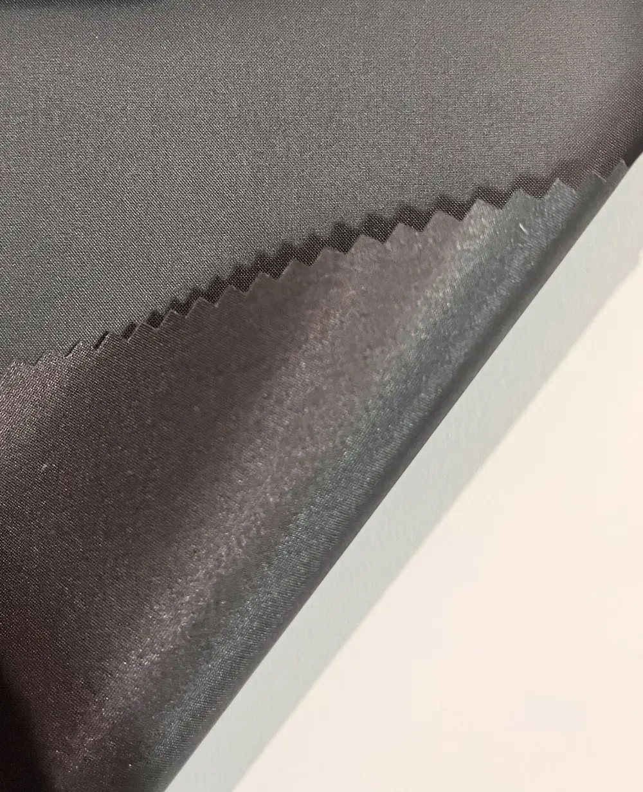

C0 DWR: fluorine-free water repellent fabrics from India
Water repellency without perfluorinated chemistry. We source C0 DWR finished nylon, polyester and stretch fabrics from Indian mills, with supplier PFC-free declarations.

The range
| Fabric | End use | Finish |
|---|---|---|
| Nylon 36–130 GSM | Shells, windbreakers, rainwear, down jackets | C0 DWR |
| Polyester 72–81 GSM | Windbreakers, packable rain shells | C0 DWR |
| Recycled polyester 80–160 GSM | Light shells, gilets, jackets | C0 DWR |
| Poly-spandex 135–157 GSM | Trekking pants, softshell bottoms, golf wear | C0 DWR + anti-odour |
What C0 DWR means
C0 DWR is a durable water repellent finish made without fluorinated chemistry. Water beads and rolls off the face fabric, and the fabric stays breathable.
Tested to your spec
We agree the water repellency method and pass level with your QA team, typically ISO 4920 / AATCC 22 spray rating, tested before and after washing, and collect the lab report before bulk.
Paperwork with every quote
PFC-free (C0) supplier declarations, lab test reports and, where relevant, GRS and OEKO-TEX certificates, where the mill can provide them.
Request specifications and pricing
Tell us the fabric, GSM, finish and end use. We share the spec sheet, test reports and a physical swatch.
Send a fabric enquiryDownload the collection (PDF)